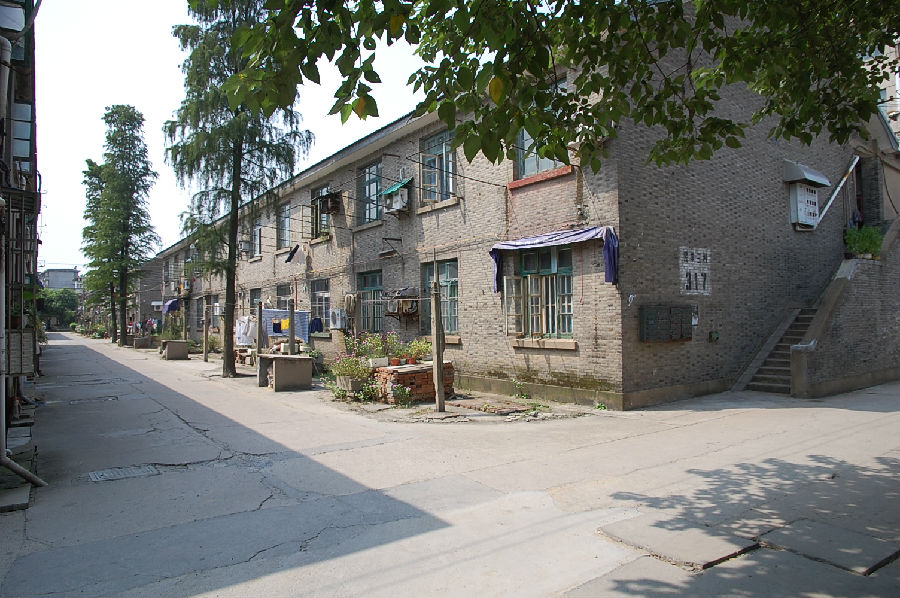

嘉兴市文物保护网 · 市级文物保护点 · 2020-11-09 · 原文

民丰造纸厂宿舍楼群位于嘉兴市南湖区南湖街道枫杨社区民丰新村，北临平湖塘。据在房屋内居住的居民介绍，这些宿舍楼始建于20世纪50年代，作为民丰造纸厂的先进工作者的住房。共有6幢，统一规格，面阔42米，进深14.73米。坐北朝南，悬山顶，为二层十二开间楼房，外墙用青砖砌成，东西两侧各设有一楼梯，朝北有阳台，20世纪80年代在其阳台北侧新加厨房，无卫生设施。民丰造纸厂曾是嘉兴市六大厂之一，其宿舍楼规模较大、保存较完整，作为民丰造纸厂延伸建筑物，具有一定的历史文物价值。2010年公布为嘉兴市文物保护点。